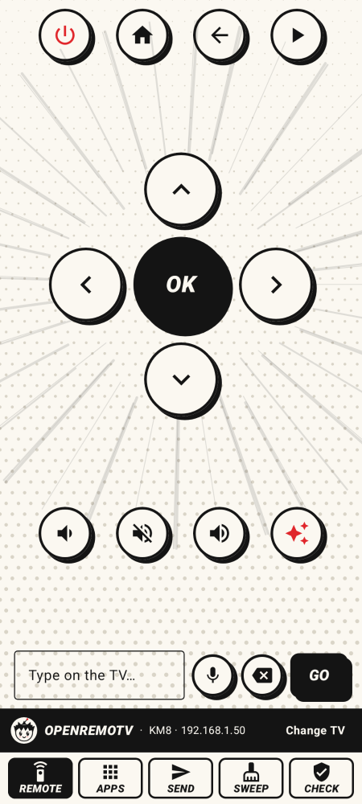
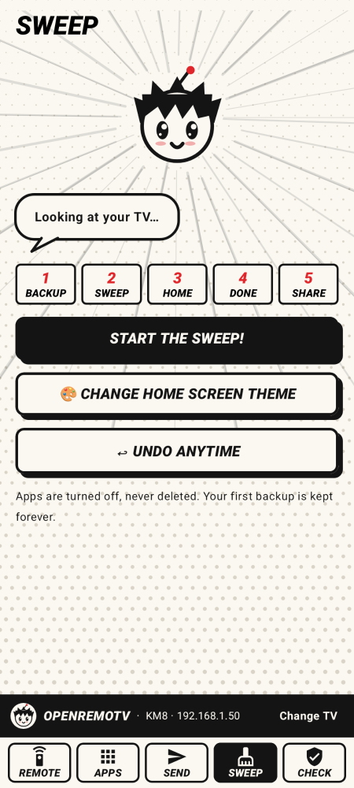
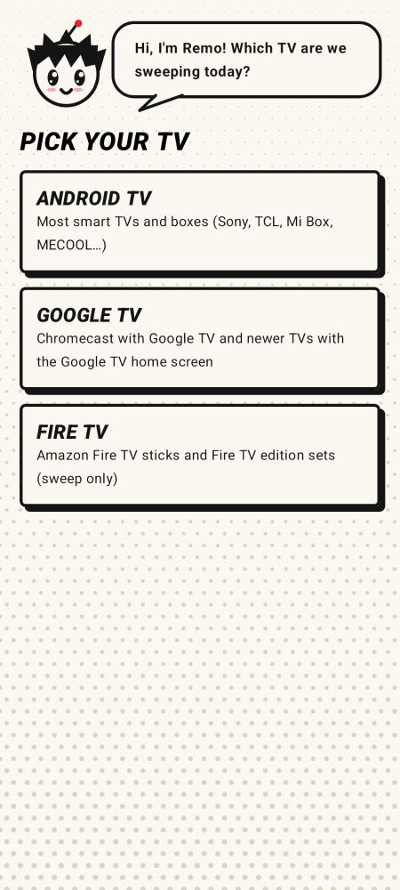
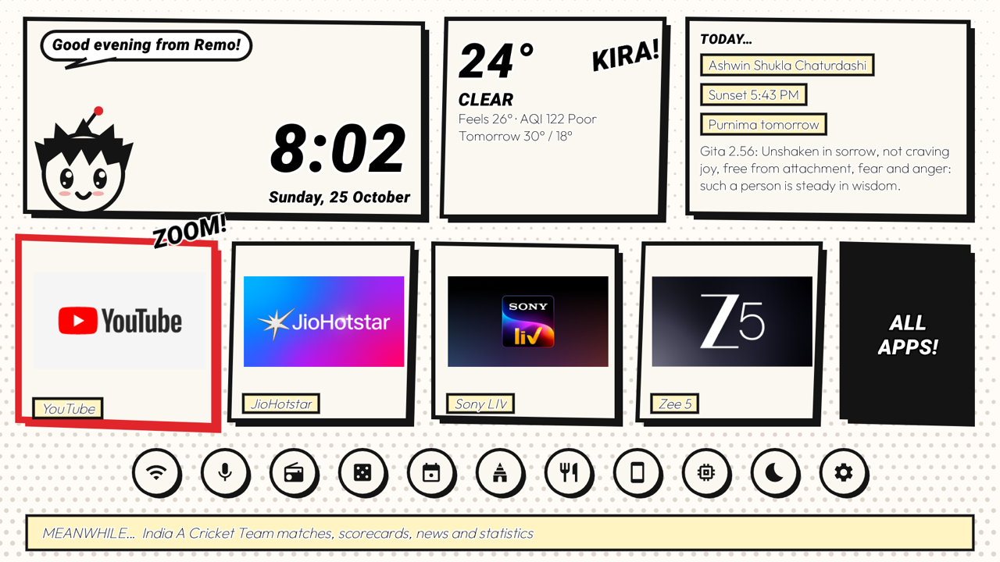

OpenRemoTV
Remote, debloat and restyle Android TV, Google TV and Fire TV from your phone. No root.
Backup first · Undo anytime · Open source
DOWNLOAD THE APK SOURCE CODE


What it does
- Remote: arrows, OK, back, home, volume, power and typing, with hold-to-repeat keys.
- Sweep: turns off bloatware using lists tested on 260 TVs. Disabled, never uninstalled.
- Undo anytime: back to your very first backup in one tap.
- Send: YouTube links, photos, videos and files straight to the TV.
- Home screens: MangaHome, a whole comic page, and IndiaMinimalist, with photos of India and the Panchang.
- English and Hindi, with screen-reader support.

Questions
How do I remove bloatware from Android TV without root?
Use ADB's "disable for this user" command, which turns an app off without uninstalling it. OpenRemoTV does it from your phone, one switch per app, starting from a list tested on a TV like yours.
Is it safe?
Apps are only disabled, never uninstalled. A backup comes first, and apps the TV needs are locked.
How do I undo it?
Open Sweep and tap Undo anytime.
Which TVs work?
Android TV and Google TV on Android 8 or newer, and Fire TV for sweeping.
Does it collect data?
No accounts, no analytics, no ads. Privacy
MIT licence. Sweep flow inspired by TidyTV.